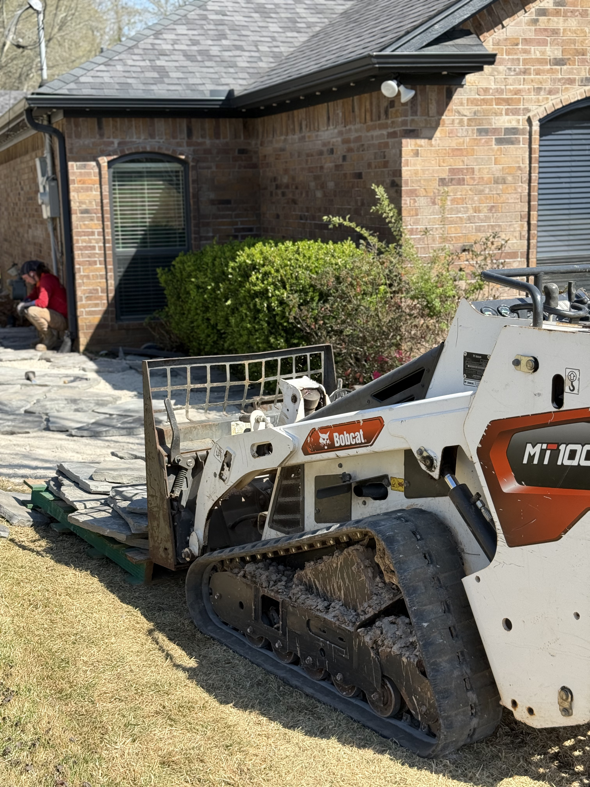

Drainage & Grading in Longview, TX
Professional drainage and grading serving Longview and surrounding East Texas communities.
Get a Free Quote in LongviewWho fixes yard drainage in Longview, TX?
Yard Dog Landscapes is a family-owned company that has solved drainage problems across Longview and East Texas since 2017, with a 5.0 rating across 111 Google reviews. We regrade low spots and install French drains, surface drains, and downspout runs to move water off your yard — which matters here, where sandy topsoil sits over slow-draining red clay and water pools on top. Cost depends on how much of the yard is affected, the linear footage of pipe, and how the site grades and accesses, so every job is scoped on its own. Call (903) 844-6877 for a free on-site drainage assessment in Longview.
Trusted Drainage & Grading Company Serving Longview, TX
Yard Dog Landscapes is the drainage and grading Longview TX homeowners trust to show up, do the work right, and treat the property like our own. We've been working yards across Gregg County since 2017, and Longview sits in our regular service area alongside White Oak and Kilgore. When you call us for drainage and grading Longview Texas, you get a local crew, a written estimate, and the same standards on every visit.
Longview is the hub of the Piney Woods and the largest city in Gregg County, and the yards here come with the territory: tall pines, mature oaks, rolling lots, and the sandy loam over iron-red clay subsoil that East Texas is known for. Longview's rolling lots and the red clay sitting under the sandy topsoil are a recipe for standing water and soggy low spots after the heavy spring storms that roll through the Piney Woods, because water sheets off the slopes and perches on the clay, which is why French drains and regrading are some of our most-requested work here. We have worked yards from Pine Tree and Spring Hill to Greggton and the older neighborhoods near downtown, and drainage and grading here only works when it is built for that ground instead of a one-size-fits-all script.
From routine drainage and grading to bigger seasonal projects, our crew handles Longview properties of every size. We also serve nearby White Oak, Kilgore, and Hallsville, plus the rest of Gregg County. Call (903) 844-6877 or request a free quote online — we walk every property in person before we send a price.
What's Included With Drainage & Grading in Longview
Drainage & Grading we've done around East Texas.



Why Longview Homeowners Choose Yard Dog Landscapes
Local crew, local knowledge
Familiar with East Texas soil, grass, and climate — because we work it every day.
Free on-site quotes within 24 hours
We walk the property in person and send a written, itemized estimate fast.
Licensed, insured, family-owned since 2017
Same crew, same standards, every visit. Fully licensed and insured.
What East Texas homeowners say about Yard Dog.
I recently hired Miller to clear out my ditch area, and I couldn't be more impressed with the results. ... They cleared the area quickly, removing overgrowth, debris, and ensuring proper drainage. ... The ditch now looks great, and I can already tell it's going to function much better. Overall, highly recommend Miller for any type of lawn care!
Miller and the 2 young gentleman that did work at my home today were great! Each of them had great manners, respect and worked extremely hard to get the job done. I look forward to using them again in the near future.
Fantastic service, team has taken great care of our lawn. Always on time and respectful of the land. These guys go the extra mile.
Frequently Asked Questions
Do you offer drainage and grading in Longview, TX?
Yes. Yard Dog Landscapes is a family-owned company that's been serving Longview and the rest of Gregg County since 2017, and drainage and grading is one of our core services. Whether you want a one-time job or recurring work tied to the season, we'll write up a clear, itemized estimate and stick to it.
How often should I schedule drainage and grading in Longview?
Drainage is typically a one-time install, though we will check the system after the first few heavy rains and can clear catch basins seasonally if you would like us to. Every Longview property is a little different, so we'll walk yours and recommend a schedule that fits how the yard actually grows.
What areas near Longview do you serve?
Yard Dog Landscapes serves Longview, plus nearby White Oak, Kilgore, Hallsville, and surrounding Gregg County communities. If you're not sure whether you're in our service area, give us a call at (903) 844-6877 — we cover most of East Texas.
Are you local to Longview, TX?
Yes. Yard Dog is based right here and works Longview yards every week, from Pine Tree and Spring Hill to Greggton and the neighborhoods near downtown. We are family-owned, fully insured, and hold a 5.0 rating across more than 110 Google reviews from East Texas homeowners.